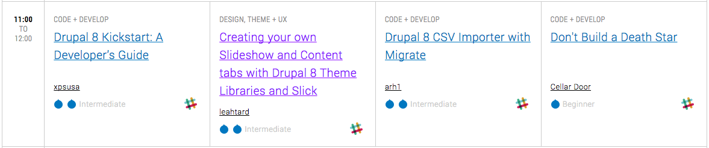
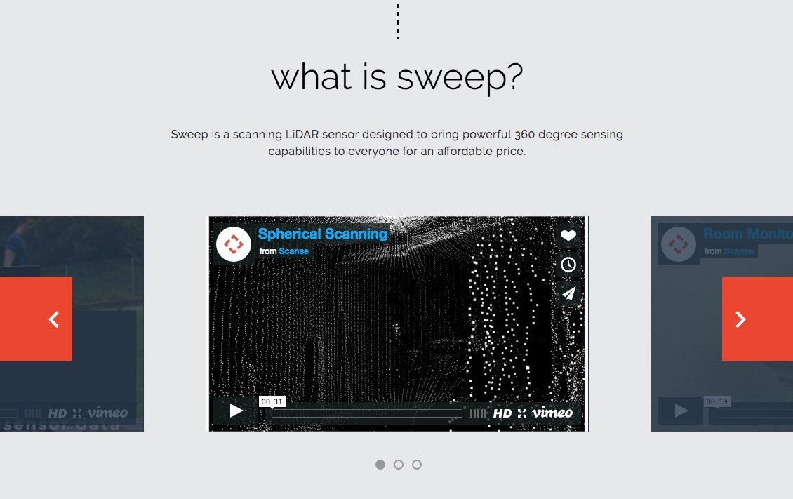

Our awesome clients gave us really cool prizes to give away!
Enter our raffle to win cool stuff from Grouse Mountain, Banyen Books, Fuud, Klei Entertainment, Six Cents Press and more!
Drupal 8 Theming DIY
Creating a Slideshow and Content Tabs with Theme Libraries and Slick
by Leah Wagner // @leahamwagner
from The Jibe // @thejibe
Join us on 
#1 Get access: https://pnwds-slack.herokuapp.com/
#2 Download an app or visit https://pnwds.slack.com/
#3 Join a session

#4 We are here: slack://channel?team=T3G3AAL8N&id=C40P99QTV
Hi, I'm Leah!
@leahamwagner // leahtard
- Front-end and Drupal developer at The Jibe in Vancouver, BC.
- Co-maintainer for the Basic starter theme.
- Member of the PNW Drupal Summit planning committee.
- I clean markup, componentizing design, modular code,
witbeir, red wine, running and rock & roll.
Hi, I'm Leah!
@leahamwagner // leahtard
- Front-end and Drupal developer at The Jibe in Vancouver, BC.
- Co-maintainer for the Basic starter theme.
- Member of the PNW Drupal Summit planning committee.
- I clean markup, componentizing design, modular code,
witbeir, red wine, runningand rock & roll.
ice cream, pickles, prenatal yoga
Drupal 8 Theming DIY
The Context
visit at: scanse.io
+
Theme Libraries
Drupal 8 Theming DIY
Theme Libraries
As the front-end community (not just the front-end Drupal community) moves towards Modular CSS implementations (SMACSS, OOCSS, etc) and online style guides, I see this as a hindrance or irrelevant to this production workflow.
leahtard // https://www.drupal.org/node/2377397
I
Theme Libraries
Theme Libraries 101
Created through the theme’s yml files
THEME.info.yml
Note: All references to THEME would be replaced by your theme name.
Theme Libraries 101
Further definition of CSS and JS required
THEME.libraries.yml
continued in right column
vs.
Drupal 7
Drupal 8 Theming DIY
Creating a Slideshow
What is Slick?
the last carousel you'll ever need
- Fully responsive
- Settings by breakpoint
- Swipe enabled
- Centre focus display
- Autoplay, dots, arrows, callbacks, etc...
Learn more: http://kenwheeler.github.io/slick/
The Design
Desktop display
Mobile display
The HTML Markup
First, configure Drupal to render your content. Views? Paragraphs? Here, the how doesn't matter.
Create a Theme Library
Back to the theme library...
THEME.libraries.yml
continued in right column
Configure Slideshow
slick.config.js
Bringing it together
Step 1: Starting with a Twig template
field--field-slideshow-slides.twig.html
Bringing it together
Step 2: Attaching the theme library
field--field-slideshow-slides.twig.html
Bringing it together
Step 3: Add the JS class our config defines
field--field-slideshow-slides.twig.html
Drupal 8 Theming DIY
Creating Content Tabs
The Design
Desktop display
Mobile display
What JS library?
Slick, yet again...
- Fade mode available
- Modify pager with customPaging variable
Learn more: http://kenwheeler.github.io/slick/
The HTML Markup
First, what does our content look like?
Create a Theme Library
slick.config.js
Bringing it together
Again, our Twig template makes it happen...
field--field-slideshow-slides.twig.html
Drupal 8 Theming DIY
References & Links
DEVELOPER CENTER
References
Theme Structure & Libraries
- CSS file organization: https://www.drupal.org/node/1887922
- Adding CSS and JS to a D8 theme: https://www.drupal.org/docs/8/theming-drupal-8/adding-stylesheets-css-and-javascript-js-to-a-drupal-8-theme
- Drupal 8 Theming: Defining file organization with SMACSS: https://thejibe.com/articles/drupal-8-theming-defining-file-organization-smacss
- Drupal 8 Theming: How to use theme libraries: https://thejibe.com/articles/drupal-8-theming-how-use-theme-libraries